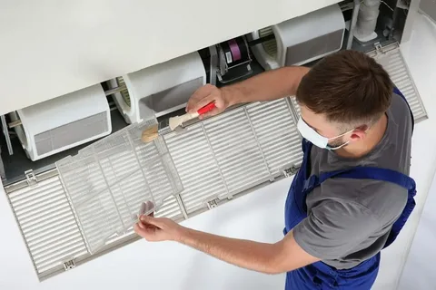

شركة تنظيف مكيفات حي ظهرة لبن | شركة صيانة مكيفات حي ظهرة لبن 0559865517

مع ارتفاع درجات الحرارة، أصبحت المكيفات جزءًا لا غنى عنه داخل المنازل والمكاتب، خاصةً في حي ظهرة لبن حيث المناخ الحار يستمر طوال العام. ومع تزايد الاعتماد عليها، يصبح الحفاظ على كفاءتها أمرًا ضروريًا لتجنب الأعطال وضمان هواء نقي. وهنا يأتي دور شركة تنظيف مكيفات حي ظهرة لبن وشركة صيانة مكيفات حي ظهرة لبن، اللتين تقدمان حلولًا متكاملة للحفاظ على أداء المكيفات وإطالة عمرها الافتراضي. تنصل بنا عبر 0559865517 او بالضغط هنا للتحويل للواتساب
شركة تنظيف مكيفات حي ظهرة لبن – خدمات متطورة لتنظيف شامل
شركة تنظيف مكيفات حي ظهرة لبن توفر خدمات تنظيف متقدمة تشمل الوحدات الداخلية والخارجية باستخدام أحدث التقنيات التي تزيل الأتربة والعوالق، مما يحسن كفاءة المكيف ويقلل استهلاك الطاقة. لا يقتصر الأمر على ذلك، بل يساعد التنظيف العميق في تعزيز جودة الهواء داخل المنزل، مما يحمي السكان من الأمراض التنفسية الناتجة عن تلوث الهواء الداخلي.
شركة صيانة مكيفات حي ظهرة لبن – وقاية من الأعطال المفاجئة
أما على مستوى الأداء الفني، تقدم شركة صيانة مكيفات حي ظهرة لبن خدمات فحص شاملة تشمل اختبار المكونات الكهربائية، وتغيير الفلاتر، واكتشاف الأعطال قبل تفاقمها. توفر هذه الإجراءات الوقائية حمايةً طويلة الأمد للمكيف، مما يمنع التكاليف الباهظة الناتجة عن الأعطال الكبرى.
لماذا يعتبر تنظيف المكيفات ضرورة في حي ظهرة لبن؟
مع الاستخدام المكثف للمكيفات، تتراكم الأتربة والغبار داخل الفلاتر والمكونات الداخلية، مما يؤدي إلى ضعف الأداء وزيادة استهلاك الكهرباء. ولهذا تؤكد شركة تنظيف مكيفات حي ظهرة لبن أن التنظيف المنتظم يحسن كفاءة الجهاز بنسبة تصل إلى 70%، كما يقلل من مخاطر الإصابة بالحساسية والأمراض التنفسية.
تأثير الأتربة على استهلاك الطاقة
عندما يتراكم الغبار داخل المكيف، يضطر للعمل بجهد أكبر لتبريد المساحة نفسها، مما يزيد من استهلاك الكهرباء بنسبة تصل إلى 30%. لهذا تقدم شركة صيانة مكيفات حي ظهرة لبن خدمات تنظيف احترافية تشمل الفحص الدوري وتنظيف القنوات الهوائية، مما يعيد للجهاز كفاءته ويمنع ارتفاع فواتير الكهرباء.
أفضل شركة تنظيف مكيفات حي ظهرة لبن – حلول متكاملة
تقدم شركة تنظيف مكيفات حي ظهرة لبن خدمات تشمل:
- تنظيف وتعقيم الفلاتر
- إزالة الأتربة من الوحدات الداخلية والخارجية
- فحص أنابيب الصرف وتنظيفها لمنع التسريبات
- استخدام تقنيات البخار لإزالة البكتيريا والعفن
أخطاء شائعة في صيانة المكيفات يجب تجنبها
- إهمال تنظيف الفلاتر: يؤدي تراكم الأتربة إلى انسداد تدفق الهواء وزيادة استهلاك الطاقة. توصي شركة تنظيف مكيفات حي ظهرة لبن بتنظيف الفلاتر كل ثلاثة أشهر على الأقل.
- تجاهل التسريبات والأصوات الغريبة: قد يكون ذلك مؤشرًا على تلف أحد المكونات. يجب التواصل مع شركة صيانة مكيفات حي ظهرة لبن عند ملاحظة أي مشكلة غير طبيعية.
- استخدام مواد تنظيف غير مناسبة: بعض المواد الكيميائية قد تتلف الأجزاء الداخلية للمكيف، لذا توفر شركة تنظيف مكيفات حي ظهرة لبن مواد تنظيف آمنة وفعالة.
- تأجيل الصيانة الدورية: الصيانة الدورية التي تقدمها شركة صيانة مكيفات حي ظهرة لبن تساعد في تجنب الأعطال المفاجئة وتحافظ على كفاءة الجهاز.
أهمية الصيانة الوقائية لأجهزة التكييف في حي ظهرة لبن
تعد الصيانة الوقائية لأجهزة التكييف عنصرًا أساسيًا للحفاظ على أدائها المثالي، خاصة في منطقة مثل حي ظهرة لبن، حيث تعمل هذه الأجهزة لساعات طويلة يوميًا. إن إهمال الصيانة قد يؤدي إلى أعطال مفاجئة، مما يزيد من تكاليف الإصلاح ويرفع استهلاك الطاقة. لذا، فإن الاعتماد على شركة صيانة مكيفات حي ظهرة لبن يضمن لك فحصًا دوريًا للأجزاء الحيوية مثل الفلاتر، والمراوح، والضواغط، مما يطيل العمر الافتراضي للمكيفات ويضمن تبريدًا فعالًا طوال العام.
دور التعقيم في تحسين جودة الهواء داخل المنازل والمكاتب
مع تزايد معدلات التلوث في المناطق الحضرية مثل حي ظهرة لبن، يصبح تنظيف المكيفات أكثر من مجرد تحسين للأداء، بل ضرورة صحية ملحة. تراكم الغبار والفطريات داخل أنابيب التكييف قد يؤدي إلى انتشار روائح كريهة ومسببات الحساسية، مما يؤثر سلبًا على صحة السكان. لذلك، تعتمد شركة تنظيف مكيفات حي ظهرة لبن على تقنيات تعقيم حديثة باستخدام البخار عالي الضغط والمواد المضادة للبكتيريا، مما يساعد على تنقية الهواء الداخلي والحفاظ على بيئة صحية وآمنة داخل المنازل والمكاتب.
كيف تقلل من استهلاك الطاقة من خلال تنظيف المكيفات؟
يؤدي إهمال تنظيف المكيفات إلى تراكم الأتربة داخل الفلاتر والمراوح، مما يجبر الجهاز على استهلاك طاقة أكبر لتحقيق التبريد المطلوب. وتشير الدراسات إلى أن التنظيف المنتظم يمكن أن يقلل استهلاك الكهرباء بنسبة تصل إلى 30%. لهذا السبب، تقدم شركة تنظيف مكيفات حي ظهرة لبن خدمات متخصصة تزيل جميع العوالق التي تعيق تدفق الهواء، مما يعزز كفاءة التشغيل ويوفر في فواتير الكهرباء. لذا، إذا كنت ترغب في تخفيض نفقاتك مع الحفاظ على أداء جهاز التكييف، فإن التنظيف الدوري هو الحل الأمثل
معايير الجودة التي تميز شركة تنظيف مكيفات حي ظهرة لبن
تتفوق شركة تنظيف مكيفات حي ظهرة لبن بفضل:
- استخدام أحدث تقنيات التنظيف مثل التعقيم بالبخار وأجهزة الضغط العالي.
- فريق فني مدرب قادر على التعامل مع جميع أنواع المكيفات.
- خدمات شاملة تشمل التنظيف والتعقيم والفحص الكهربائي.
- شفافية في التسعير وضمانات على الخدمات المقدمة.
كيفية اختيار شركة صيانة مكيفات حي ظهرة لبن المثالية
عند البحث عن شركة صيانة مكيفات حي ظهرة لبن، تأكد من:
- الخبرة في التعامل مع مختلف أنواع المكيفات
- تقديم خدمات فحص متكاملة تشمل الصيانة الوقائية
- استخدام تقنيات تشخيص حديثة لاكتشاف المشكلات مبكرًا
- وجود ضمان على الخدمة لضمان جودة الإصلاحات
الخاتمة
سواء كنت تبحث عن شركة تنظيف مكيفات حي ظهرة لبن للحفاظ على نظافة وكفاءة جهاز التكييف، أو تحتاج إلى شركة صيانة مكيفات حي ظهرة لبن لضمان تشغيل مستقر دون أعطال، فإن الاختيار الصحيح يضمن لك هواءً نقيًا وتبريدًا مثاليًا طوال العام. لا تؤجل العناية بمكيفك، وتواصل اليوم مع المتخصصين لضمان أداء مثالي وراحة دائمة تواصل معنا 0559865517